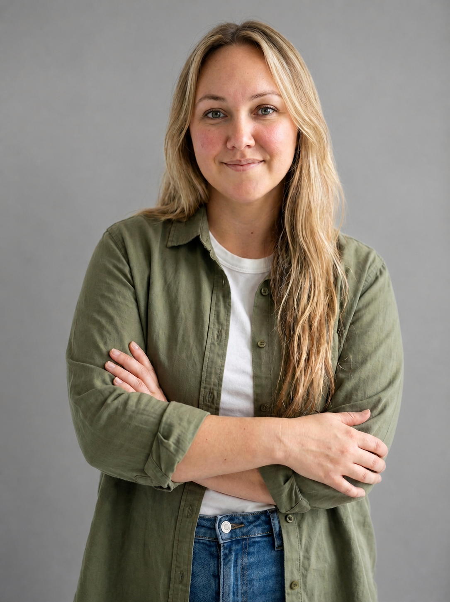
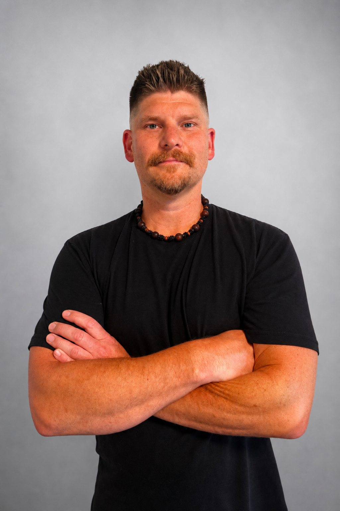

Our Team
Meet the practitioners shaping Stillwater Wellness Clinic
Registered Massage Therapist
Shawna
Shawna has been a Registered Massage Therapist since 2012, providing care to clients throughout the Victoria and Sooke regions. She is known for her adaptable treatment approach, customizing each session to meet the unique needs and goals of her patients.
Whether clients are seeking relaxation, recovery from injury, or relief from chronic tension, Shawna combines therapeutic and restorative techniques to deliver effective, personalized care. She has a particular interest in treating problem areas using techniques such as trigger point therapy, deep tissue work, and myofascial release, while ensuring treatments remain comfortable and tailored to each individual.
Outside of the clinic, Shawna enjoys spending time with her son, weight training, hiking, mountain biking, camping, and exploring the outdoors with her dogs, family, and friends.

Registered Massage Therapist
Emily Good
Emily is a Registered Massage Therapist (RMT) in BC since March 2024 with 5 years of clinical practice. She earned her Massage Therapy diploma from Mount Royal University in Calgary, Alberta, where she first practiced before moving to the island in 2023.
Dedicated to improving the body-mind connection, Emily focuses heavily on chronic pain management, back and shoulder injuries, and pediatric care. Her treatment style is characterized by deliberate, slow, deep pressure, which she dynamically adjusts based on the specific needs and tolerance of each individual's body. To further support her patients' healing, Emily has expanded her services to include hot stone massage.
When she isn't treating patients, Emily enjoys building with clay, her lifelong love for horses, and family adventures with her children.

Registered Massage Therapist
Darcy Snyder
Darcy is a Registered Massage Therapist and graduate of the West Coast College of Massage Therapy. Having called Victoria home for more than 20 years before returning in recent years, he is grateful to once again call the city home and to support the health and well-being of the community that helped shape him.
Before becoming an RMT, Darcy spent many years working in the construction industry, giving him firsthand insight into the physical demands of repetitive movement, heavy labour, and physically demanding careers. This experience has shaped his understanding of both acute and chronic musculoskeletal conditions, as well as the importance of restoring function through thoughtful, individualized care.
Darcy believes the body functions as an interconnected system, where lasting improvements in health and mobility come from understanding how each part contributes to the whole. His treatment philosophy combines evidence-informed assessment with a whole-body approach, focusing on identifying and addressing the underlying contributors to pain and movement dysfunction rather than simply treating symptoms.
Whether your goals are recovering from an injury, managing chronic pain, improving athletic performance, or simply moving with greater comfort and confidence, Darcy is committed to providing patient-centered care in a welcoming and supportive environment. His treatments are tailored to each individual, helping patients restore mobility, reduce discomfort, and regain confidence in their movement.
Outside the clinic, Darcy enjoys spending time outdoors camping, golfing, riding his motorcycle, playing pool, and barbecuing year-round—regardless of the weather.
Wellness Practitioner
Tara Given
With over 20 years of nursing experience, I have had the privilege of supporting others through compassion, connection, and care. My personal journey has led me to holistic wellness, where I am passionate about creating a space that recognizes the interconnectedness of body, mind, and spirit while nurturing overall wellbeing.
Through Roots to Wings, I offer Indian Head Massage, Relaxation Massage, and Crystal Healing, as well as blended sessions combining these modalities. Each session is designed to encourage deep relaxation, ease everyday stress, and support a greater sense of balance and harmony, guided by presence, intention, and genuine respect for each person's unique needs and wellness journey.
At Stillwater Wellness Clinic, I am honoured to be part of a team dedicated to providing a calm and welcoming environment where clients can pause, restore, and reconnect with themselves.
Outside of the clinic, you'll often find me exploring nature, hiking with my dogs, and finding inspiration in the beauty and serenity of the outdoors.
Book With Tara